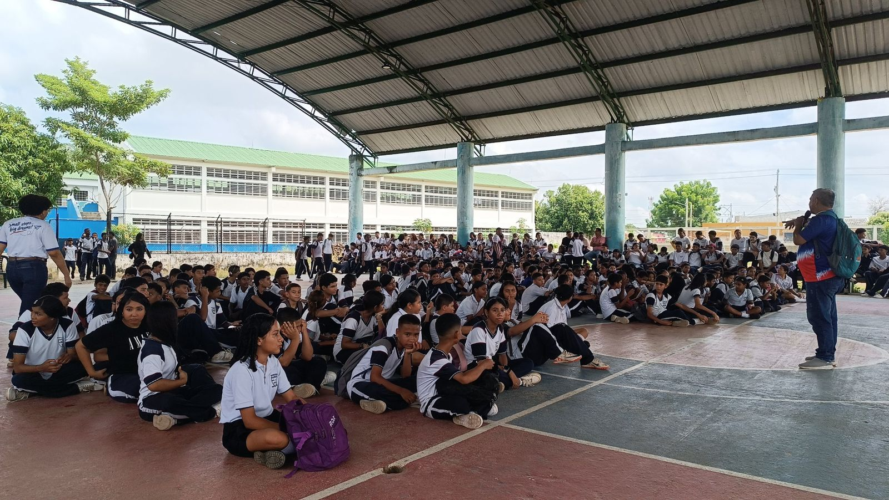
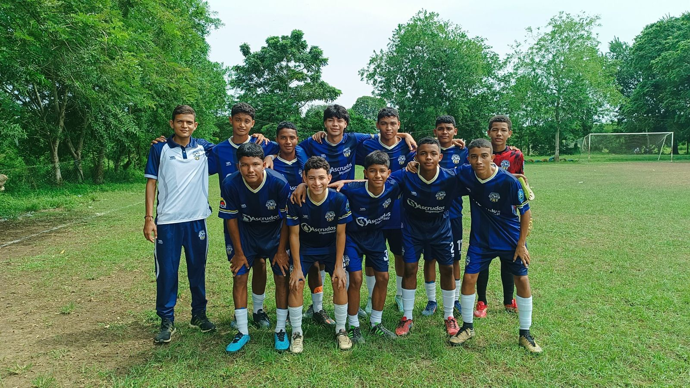
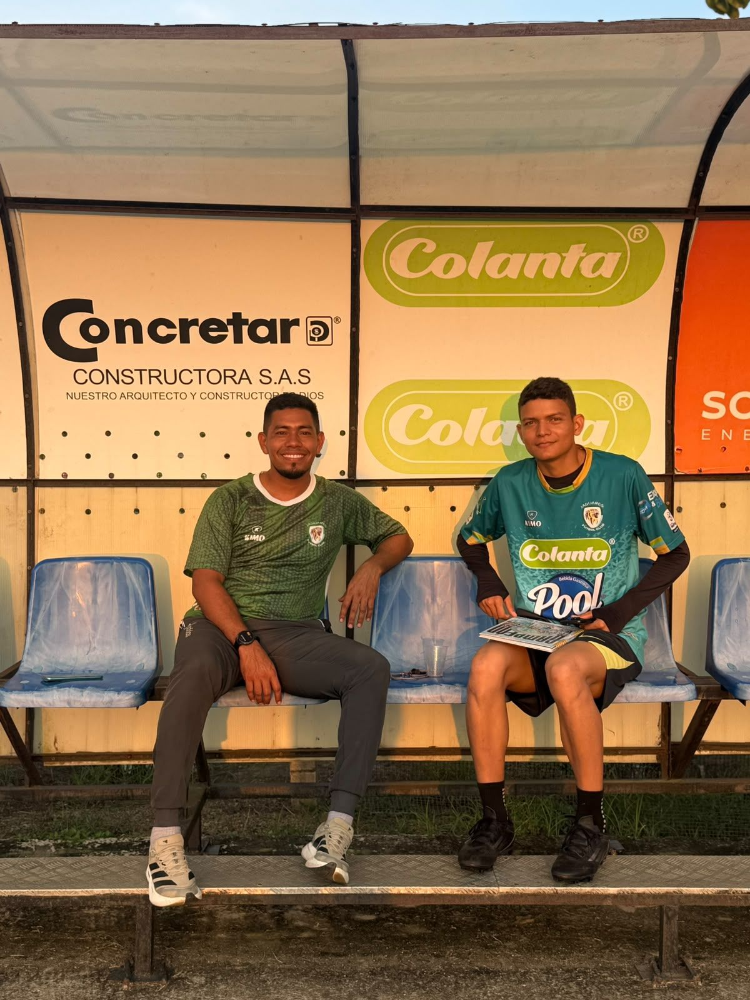
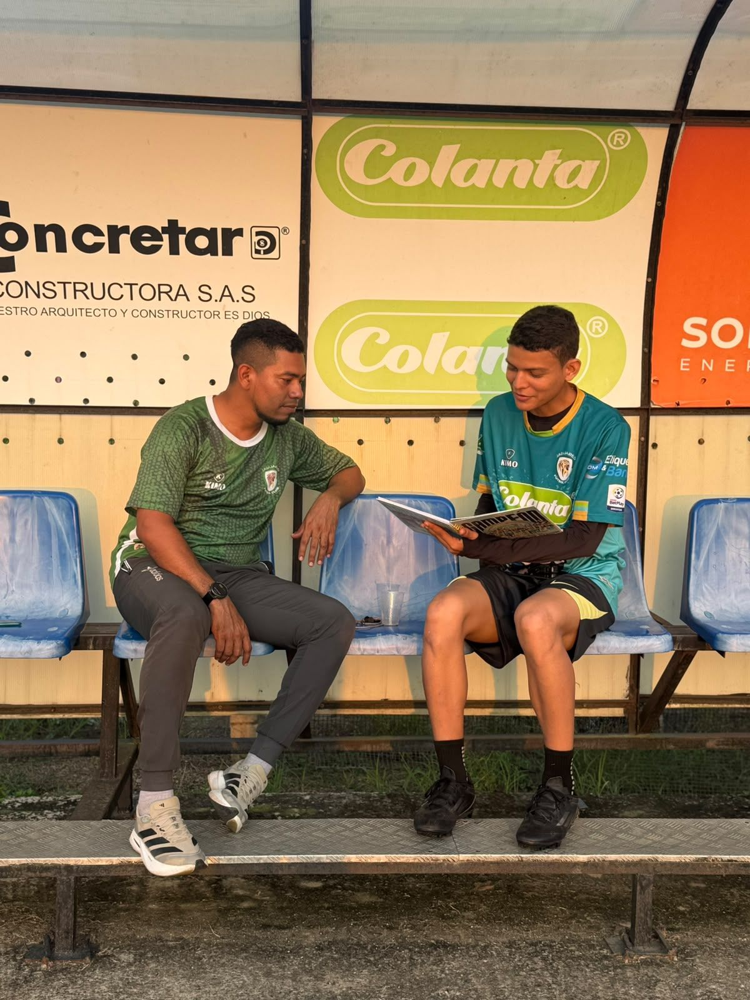
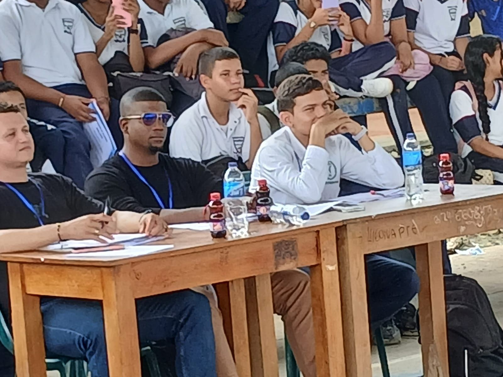
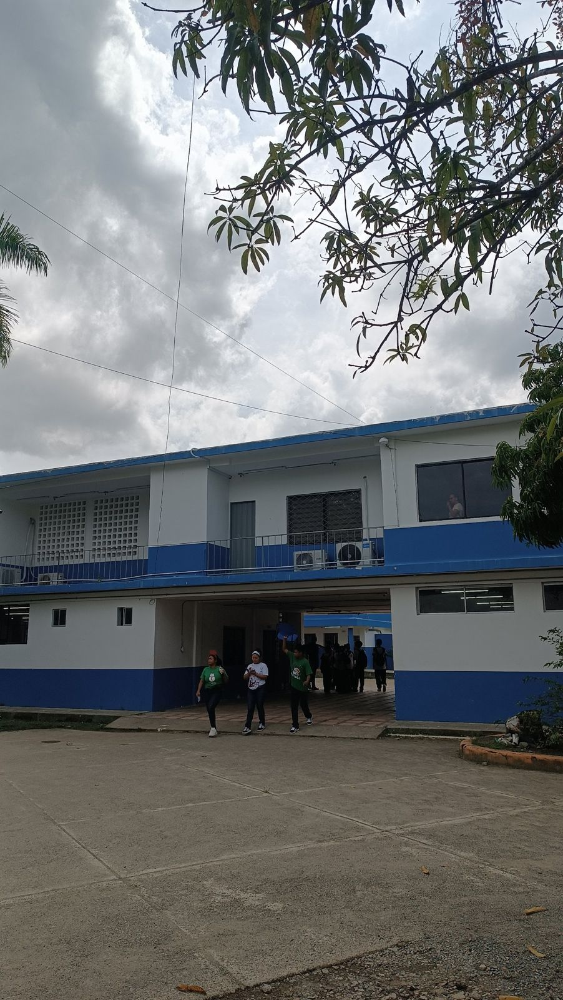
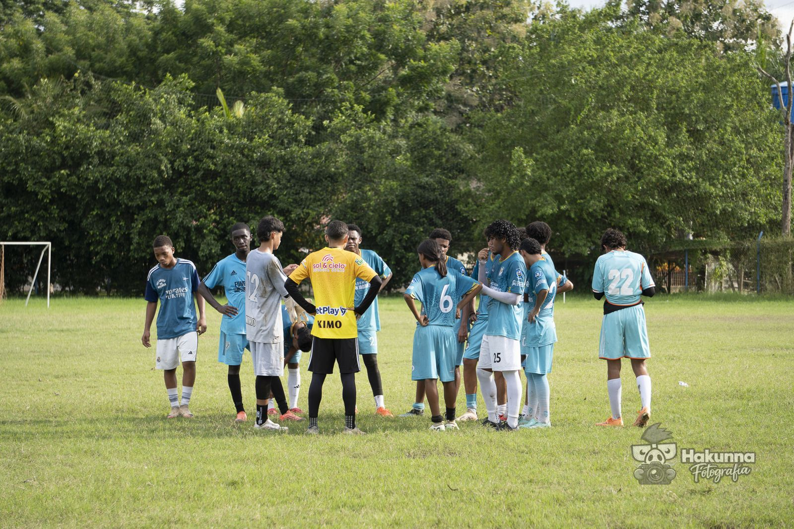
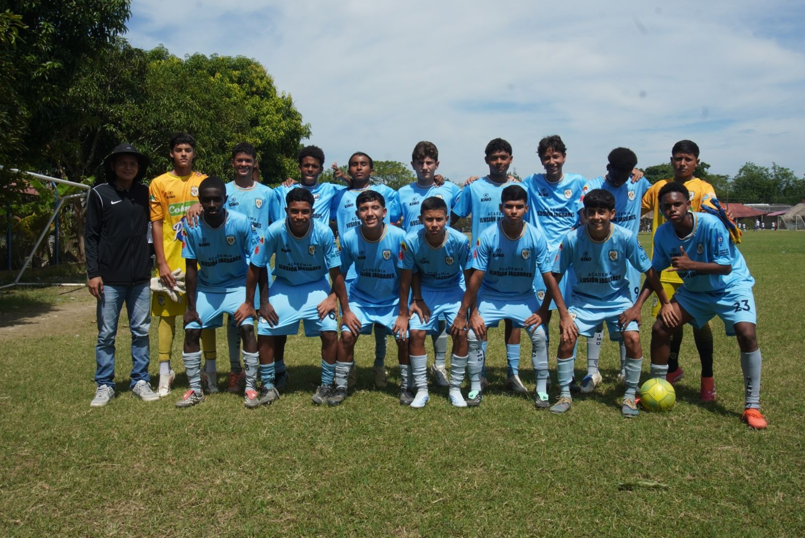
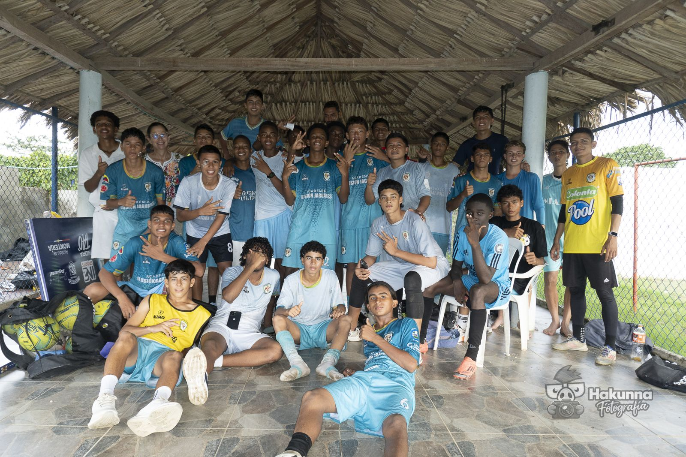

About this portfolio
Each week follows the course template: key learning, personal connection, lifelong learning and empowerment insight, and leadership reflection, followed by the evidence of my work with a short annotation. The weeks build one thread: defining leadership, choosing a perspective, testing it in an interview, and writing and defending a personal leadership statement.
- Instructors
- Pedro P. Aguas, PhD · Delia González Lara, MA
- Practicum
- I.E. Liceo Guillermo Valencia, grades 8-1 and 8-2
- Coaching
- Jaguares de Córdoba U-15 · C.D. Los Calidosos (founder and president)
- Learning team
- Started with María del Carmen Álvarez Salcedo; I completed the TLA1 individually
- Perspective
- Transformational leadership
- Strategy
- #5 Interview of a Leader: Prof. Alex Rivera, Jaguares de Córdoba U-17A
“My leadership is not measured on the day I speak, but on the day my learners speak without me.”
Herazo, A Personal Leadership Statement
Week 1 · Sep 21–23, 2026
Learning teams, lifelong learning and teacher empowerment
Learning Team Charter · Lifelong learning and leadership · Defining teacher empowerment (Short, 1994)
Key learning
Lifelong learning is the continuous development of knowledge and professional skills throughout a career, through continuing education, professional certification and advanced academic study. Learning becomes leadership only when it is applied to improve practice. Short (1994) adds that empowerment is the process through which teachers develop the competence to take charge of their own growth and solve their own problems.
Personal connection
My own path fits this idea. I hold an FCF Licence C and a technical degree in Sport and Physical Training, I am finishing my degree in Foreign Language Education, and I keep certifying my languages (Linguaskill B2, Celpe-Bras B1). The nurses in the reading reminded me that every course I take only matters when it changes what I do in the classroom or on the pitch.
Lifelong learning and empowerment
I felt motivated, because the two readings connect: lifelong learning builds the competence, and empowerment gives the space to use it. Teachers who keep learning but stay isolated and excluded from decisions cannot transform their schools (Short, 1994).
Leadership reflection
Writing the Learning Team Charter showed me that teamwork is also leadership: we had to set shared goals (a good working environment, constant feedback, delegation) and anticipate conflicts (differences of opinion, lack of communication). I offered research, task planning and AI prompt engineering as my contribution to the team.
Evidence
- Learning Team Charter (with María del Carmen Álvarez Salcedo)
- Skill profile, team goals and conflict management. My contribution: research and innovation, task planning, AI prompt engineering.
- Slides: Lifelong Learning and Lifelong Learning and Leadership
- Three ways to keep learning, and the sequence learning → knowledge → action → leadership. I presented the oral explanation.
- Infographic: Defining Teacher Empowerment
- What empowerment is and why it matters: limited participation in decisions, isolation from colleagues, and collaborative problem-solving.
- Class question: lifelong learning and empowerment
- Lifelong learning gives teachers the competence; empowerment gives them autonomy and voice to use it.
- A1 Mini essays 1 and 2 (assigned)
- Personal experiences with lifelong learning, and Where do I feel empowered/disempowered in my role as a student or teacher?

Week 2 · Sep 28–30, 2026
The nature of leadership and leadership vs. management
The nature of leadership (Daft, 2008, pp. 4–7; Silva, 2016) · Leader's Self-Insight (Daft, 2008, p. 16) · Leadership vs. management
Key learning
Daft (2008) defines leadership as “an influence relationship among leaders and followers who intend real changes and outcomes that reflect their shared purposes” (p. 5). Silva (2016) adds context: leadership is a process of interactive influence in which, in a given context, people accept someone as their leader to achieve common goals. Management keeps an organization stable through planning, organizing and controlling; leadership creates vision and change through people.
Personal connection
Both definitions describe my two contexts. In the classroom and on the pitch, I am not a leader because of my title, but because students and players accept my influence. The same coach can lead one group and fail with another, which is why Silva's idea of context made sense to me.
Lifelong learning and empowerment
The Leadership Self-Assessment Questionnaire gave me a score of 86/100, well above the threshold of 50 that signals the desire and perceived ability to lead. It made me more confident, but the instrument itself reminded me that commitment and determination matter more than the score.
Leadership reflection
As a coach, I noticed that I managed more than I led: I planned sessions, controlled discipline and demanded results. This week I started to ask what vision I share with my learners and how they take part in it.
Focused list: facts about leadership
- Influence: the relationship is active and multidirectional.
- Intention: people actively want significant change.
- Personal responsibility and integrity: leaders are accountable for themselves and others.
- Change: leadership looks for a different future, not the status quo.
- Shared purpose: leaders and followers move toward goals they both hold.
- Followers: they take part in the relationship and can lead too.
- Context: the same leadership works differently in different settings (Silva, 2016).
My definition: Leadership is an inner commitment that each person makes to themselves and to their peers. It goes beyond personal gain and means working, often selflessly, for the good of others and for a shared community vision.
Evidence
- The Nature of Leadership worksheet
- Directed paraphrasing of Daft and Silva, a focused list, and my own definition of leadership, which later became the core of my TLA1 introduction.
- Leadership Self-Assessment Questionnaire
- Score: 86/100.
- Mini-presentation on What is Leadership? (Silva, 2016)
- Our interpretation of Silva's definition (leader, followers and context) applied to my profile as teacher and coach.
- W2a Mini essay (assigned)
- As a future language teacher, what kind of leader do I aspire to be in my classroom, my institution, and my professional community?

Week 3 · Oct 6–8, 2026
Exploring leadership perspectives
Facts Matrix: Exploring Leadership Perspectives · Transformational Leadership Plans (Aguas et al., 2017)
Key learning
There is no single way to lead: the matrix compared eleven perspectives (instructional, teacher, student, principal, transactional, transformational, moral, authentic, integral, strategic and adaptive). Aguas et al. (2017) showed me how to turn a perspective into action through a six-step plan: decide on the basis of current theory, identify strengths and weaknesses, design a plan, identify the gaps between the current and the future leader, implement action items, and set a timeline.
Personal connection
I chose transformational leadership because it describes what I want for my learners and players: that each one goes beyond the level they arrived with. It also fits my definition of leadership as a commitment to others and to a shared vision. The article was written at our own university by our instructor, so it showed me that leadership plans can grow from our local context.
Lifelong learning and empowerment
I felt capable, because the six steps gave me a concrete route. A perspective is not only theory: it becomes a plan with action items and dates.
Leadership reflection
Transformational leaders share a vision and inspire followers to reach common goals (Aguas et al., 2017). Its four components (idealized influence, inspirational motivation, intellectual stimulation and individualized consideration) became the lens I used for the rest of the course.
My chosen perspective
| Perspective | Rationale | Sources |
|---|---|---|
| Transformational leadership | It develops followers into leaders, raises their needs toward a shared purpose, and fits both my classroom and my football teams. | Daft (2008); Bass (1985); Burns (1978); Leithwood & Sun (2012); Aguas et al. (2017) |
| Teacher leadership (related) | Teachers influence colleagues and learners to improve teaching and learning without a formal position. | York-Barr & Duke (2004) |
| Authentic leadership (related) | Language teacher leadership is enacted daily in classroom interaction. | Greenier & Whitehead (2016) |
Evidence
- Facts Matrix: Exploring Leadership Perspectives
- Comparison of eleven perspectives; I chose transformational leadership, supported by books and research articles in APA.
- Reading: Transformational Leadership Plans (Aguas et al., 2017)
- The six steps became the structure of my brief plan in Progress Report 1 and of my 2027 plan in the TLA1 article.
Week 4 · Oct 13–15, 2026
Leadership strategies and the Leadership Statement
The Leadership Statement writing process and Progress Reports · Seven leadership strategies · TLA1 Introduction
Key learning
A leadership competency is shown by experiencing it, not only by describing it. The course offered seven strategies to do this: case study, reflection, role-play, simulation, interview of a leader, research projects, and storytelling. I also learned how the Leadership Statement is built step by step: introduction, assumptions, empowerment and implications for the future, and conclusion.
Personal connection
I chose strategy #5, Interview of a Leader: to observe or interview someone who leads others and report the findings in 5–6 minutes. I picked Professor Alex Rivera, head coach of the U-17A team at Jaguares de Córdoba, because coaching adolescents is very close to teaching them: his players are finishing school and making decisions about their future.
Lifelong learning and empowerment
I felt motivated, because I could connect the course with the world where I already lead. Learning from a colleague inside my own club is a form of lifelong learning, close to the study groups and peer learning we read about in week 1.
Leadership reflection
Writing the introduction made me commit to my perspective in public. I started from Daft's (2008) relational definition, added my own definition, and explained why transformational leadership, with its focus on collective purpose, is the core of my statement.
Evidence
- TLA1 Leadership Strategies & Progress Reports guide
- Seven strategies with time limits; I selected #5, Interview of a Leader.
- TLA1 Introduction, first draft (about 270 words)
- Daft (2008), my definition of leadership and the transformational focus on collective purpose, in the institutional template with APA citations.
Week 5 · Oct 19–22, 2026
Mental models, my initial profile and the Interview of a Leader
Mental models and assumptions · Initial Leadership Profile · Interview of a Leader · Progress Report 1
Key learning
Every leader acts from a mental model, an inner picture of how a group works. My interview showed it clearly: Professor Alex Rivera began with an authoritarian, “army-like” style and changed it when he understood that each player's mood and family situation are different. Today he sees himself as a teacher, a guide and a mirror for his players.
Personal connection
Writing my initial profile, I recognized that I also led mainly through demands and structure. Coaches like Marcelo Bielsa and Unai Emery, and research on teacher leadership (York-Barr & Duke, 2004) and authentic leadership in language teaching (Greenier & Whitehead, 2016), helped me see the gap between the leader I was and the one I want to be.
Lifelong learning and empowerment
Presenting Progress Report 1 made me feel more confident: for the first time I presented my leadership profile, definitions, perspective and a brief plan as one coherent argument, in English, to my class.
Leadership reflection
Rivera's main lesson is that trust comes from coherence between what a leader says, does and demands. His staff decides line-ups by voting after analysing competition per position, an example of participative decision-making. High standards and care are not opposites.
Interview findings
| Topic | What Prof. Rivera said | Leadership idea |
|---|---|---|
| Path to the role | Coached U-15, U-17B and U-20B before U-17A | Leadership built step by step |
| His role | Teacher and guide who gives players tools to solve problems | Developing followers |
| Why it matters | At 16–17, players get “good and bad offers” every day; the coach is a mirror | Idealized influence |
| Change over time | Started “like the army”; learned that each player is different | Learning from ineffective leadership |
| Trust | Coherence between what he says, does and demands | Credibility |
| Difficult moment | U-20A with no sponsor and long trips, yet competitive results | Resilience |
| Decisions | Competition per position, rival analysis, then a staff vote | Participative decisions |
Evidence
- Initial Leadership Profile (October 19)
- One paragraph connecting football coaching and English teaching, with York-Barr & Duke (2004), Greenier & Whitehead (2016) and Whitehead & Greenier (2019).
- Interview of a Leader: Prof. Alex Rivera (October 20)
- 4:40 p.m., Sede Deportiva Ciudad Jaguares, 12 minutes. Interview guide with 10 questions, audio recording, transcript, findings table and a 5–6 minute report script in English.
- Progress Report 1 presentation (16 slides)
- Initial profile, definitions (Daft, 2008; Silva, 2016), transformational perspective (Bass & Riggio, 2006), brief plan (Aguas et al., 2017), digital portfolio and interview report.


Week 6 · Oct 26–28, 2026
Mental models and empowering people
Mental Models – Assumptions (Daft, 2008, pp. 133–139) · Empowering People to Meet Higher Needs (Daft, 2008, pp. 242–246)
Key learning
A leader's effectiveness depends on the hidden assumptions behind his or her actions, and effective leaders treat those assumptions as temporary and question them (Daft, 2008). Empowered employees consider their jobs meaningful and see how their daily work connects to the organization's vision; that gives them a sense of direction.
Personal connection
Daft's contrast between a leader who builds shared ownership and one who believes every group needs a strong boss in control described my own change as a coach. My reflection in class connected the empowerment reading with foreign language teaching: our role goes beyond the subject, toward the human growth of students and colleagues, which is what holistic education means.
Lifelong learning and empowerment
I felt capable of explaining the link between empowerment and my perspective. The transformational leader empowers teachers, and empowered teachers, in turn, transform their students.
Leadership reflection
When teachers understand how their daily work connects to the school's vision, they feel motivated and capable, and they become committed to shared goals instead of only following instructions. Teachers led this way often become transformational leaders in their own classrooms: they inspire students, attend to each student's needs, and help them see why learning a language matters for their lives.
Focused list: Mental Models (Daft, 2008)
- Leadership is also inner work: mind, heart and values.
- A mental model is an internal picture of how a system works.
- Mental models guide action, often without the leader noticing.
- Different models create different teams: shared ownership vs. a strong boss in control.
- Google keeps a model of discomfort, risk-taking and tolerance of failure to stay innovative.
- Values, beliefs, biases and prejudices feed every mental model.
- Assumptions about people (Theory X vs. Theory Y) shape how leaders treat followers.
- Assumptions should be temporary and regularly questioned.
- Challenging our mental models helps us see new possibilities.
Questions I proposed to my classmates. Literal: What three things do empowered employees recognize about their work? Inferential: Why would understanding the organization's vision give employees “a sense of direction”? Critical: How do your daily classroom activities connect to your school's vision?
Evidence
- Focused list and one-slide summary: Mental Models – Assumptions (October 26)
- Nine key points and a single slide with a definition panel and six cards.
- Empowerment reading, three questions and written reflection (October 28)
- My reflection on holistic education, a summary linked to empowering employees, and the connection with transformational leadership.
- TLA1 guidelines: Leadership Empowerment and Implications for the Future
- 250–300 words, Daft pp. 242–246 and a research article; I planned the section using the class work of this week.

Week 7 · Nov 3–5, 2026
My Assumptions and Leadership Empowerment
TLA1 – My Assumptions · TLA1 – Leadership Empowerment and Implications for the Future
Key learning
Teachers walk into a classroom carrying implicit leadership theories that stay stable unless they are deliberately examined (Epitropaki & Martin, 2004). Daft (2008) defines empowerment as “power sharing, the delegation of power or authority to subordinates in the organization” (p. 243), built on five elements: information, knowledge, discretion, meaning and rewards.
Personal connection
I named three assumptions that changed during the course. Leadership comes with a position: Daft (2008) and Short (1994) showed me that teachers can lead without formal authority. A demanding, controlling style is the most effective: the interview with Prof. Rivera changed this belief more than any reading. Empowerment is something a leader gives: Kiral (2025) and Mokhlis & Abdullah (2025) present it as a structure that a school community builds together.
Lifelong learning and empowerment
Writing these sections made me feel more capable as a teacher leader, because I could show real changes in my practice. At Liceo Guillermo Valencia, rapport and accessible language turned some learners' rejection of English into curiosity, and some began practicing on Duolingo outside class.
Leadership reflection
I asked myself three questions: Did my learners have real opportunities to make decisions about their learning? When I set high expectations, do I also offer emotional support? How can I contribute to an empowering culture among my colleagues? I keep a transformational perspective, but with a critical eye (Berkovich, 2016).
Evidence
- TLA1 – My Assumptions (about 390 words)
- Implicit leadership theories, three shifted assumptions, collaborative work (the interview) and three self-questions.
- TLA1 – Leadership Empowerment and Implications for the Future (about 275 words)
- Daft's five elements, my practicum, the U-15 players, the SIGE Jaguares app, and a three-step plan for 2027 (Aguas et al., 2017; Fransen et al., 2014).

Week 8 · Nov 10–12, 2026
Conclusion and rubric review
TLA1 – Conclusion · Abstract and keywords · Review of the whole statement against the rubric
Key learning
Transformational leadership “develops followers into leaders” (Daft, 2008, p. 357). The success of a leadership plan does not depend on the leader alone, but on how progressively people take ownership of their own process.
Personal connection
When I first asked my U-15 players at Jaguares what they thought about a match, I received short answers or silence. I tell them that everyone is a leader and that the captain's armband does not make one; real leadership will let them wear it with arguments (Fransen et al., 2014).
Lifelong learning and empowerment
Reviewing every section against the rubric taught me that academic writing is also a leadership practice: each claim needs evidence, each quote must be exact, and every citation needs its reference. I finished the week more confident in my writing.
Leadership reflection
To innovate and ensure the quality of foreign language education, schools need empowered teachers (Mokhlis & Abdullah, 2025) who help students become critical of their learning and see English as key to their professional lives and to learning for life, through passion, rapport and purpose (Whitehead & Greenier, 2019).
Evidence
- TLA1 – Conclusion (190 words)
- Answers what the success of leadership plans depends on and what schools need to innovate, with Daft (2008) and three research articles.
- Abstract (115 words) and keywords
- transformational leadership; teacher empowerment; shared leadership; foreign language education; personal leadership statement
- Rubric review
- The introduction was aligned with the perspectives in the rubric, Daft's quote was corrected to the exact wording, and all 18 references were checked.


Week 9 · Nov 16–19, 2026
Oral defense and my leadership strategy on the table
Final Leadership Profile · Oral defense of the Personal Leadership Statement · TLA1 Final Report video
Key learning
A leadership statement is complete only when the article, the presentation and the practice say the same thing. My final profile closes with my own sentence instead of another author's quote.
Personal connection
My practicum at Liceo Guillermo Valencia ended on November 18. Some learners who saw English as a foreign imposition now want to become English teachers. At Jaguares, my U-15 players were used to a coach with a direct-command style; now I stay silent so they speak first, analyze and propose their own solutions.
Lifelong learning and empowerment
I finished the course feeling empowered as a teacher leader. Colleagues now ask for my strategies, and I developed the SIGE Jaguares app to give the club's coaches information and knowledge for better decisions, two of Daft's five elements of empowerment.
Leadership reflection
I moved from a demanding coach to a leader who steps back so others can step up. One leader at the head of a group is not the same as dozens of leaders pushing it toward common goals. My plan for 2027: consolidate shared leadership in my U-15 players, give future classroom groups real choices over topics and tasks, and share these practices with school colleagues.
Evidence
- Final TLA1 article: A Personal Leadership Statement
- Profile, Introduction, My Assumptions, Leadership Empowerment and Conclusion, with 18 APA references.
- Oral defense presentation (institutional Unicórdoba template)
- Profile, introduction, assumptions and key questions, empowerment and the 2027 plan, conclusion and references.
- Video: TLA1 Leadership in Action (4:57)
- Step back so they can step up. The performative part shows a team talk in which I ask “What are we missing?” and let my players answer.

Closing reflection
Nine weeks ago I defined leadership as a commitment to others. Today I can add how it works: it is shared, it grows when the leader questions his own assumptions, and it is measured by what learners and players can do without him. This diploma course showed me that my words and actions can transform lives: if one learner breaks their own barriers and transforms their reality, I have fulfilled my purpose as a teacher leader.
References
- Aguas, P. P., Valle Zapata, L., & Lorduy Arellano, D. (2017). Transformational leadership plans. World Journal of Education, 7(4), 1–11. https://doi.org/10.5430/wje.v7n4p1
- Bass, B. M. (1985). Leadership and performance beyond expectations. Free Press.
- Bass, B. M., & Riggio, R. E. (2006). Transformational leadership (2nd ed.). Lawrence Erlbaum Associates.
- Berkovich, I. (2016). School leaders and transformational leadership theory: Time to part ways? Journal of Educational Administration, 54(5), 609–622. https://doi.org/10.1108/JEA-11-2015-0100
- Burns, J. M. (1978). Leadership. Harper & Row.
- Daft, R. L. (2008). The leadership experience (4th ed.). Thomson South-Western.
- Epitropaki, O., & Martin, R. (2004). Implicit leadership theories in applied settings: Factor structure, generalizability, and stability over time. Journal of Applied Psychology, 89(2), 293–310. https://doi.org/10.1037/0021-9010.89.2.293
- Fransen, K., Vanbeselaere, N., De Cuyper, B., Vande Broek, G., & Boen, F. (2014). The myth of the team captain as principal leader: Extending the athlete leadership classification within sport teams. Journal of Sports Sciences, 32(14), 1389–1397. https://doi.org/10.1080/02640414.2014.891291
- Greenier, V. T., & Whitehead, G. E. K. (2016). Towards a model of teacher leadership in ELT: Authentic leadership in classroom practice. RELC Journal, 47(1), 79–95. https://doi.org/10.1177/0033688216631203
- Kiral, B. (2025). Teacher empowerment as a structure supporting teachers' development: Principals' practices and ideal empowerment. SAGE Open, 15(2). https://doi.org/10.1177/21582440251339309
- Leithwood, K., & Sun, J. (2012). The nature and effects of transformational school leadership: A meta-analytic review of unpublished research. Educational Administration Quarterly, 48(3), 387–423. https://doi.org/10.1177/0013161X11436268
- Mokhlis, S., & Abdullah, A. H. (2025). The impact of teacher empowerment on schools' innovation climate. Journal of Education and Learning (EduLearn), 19(1), 322–329. https://doi.org/10.11591/edulearn.v19i1.21633
- Short, P. M. (1994). Defining teacher empowerment. Education, 114(4), 488–492.
- Silva, A. (2016). What is leadership? Journal of Business Studies Quarterly, 8(1), 1–5.
- Whitehead, G. E. K., & Greenier, V. T. (2019). Beyond good teaching practices: Language teacher leadership from the learners' perspective. TESOL Quarterly, 53(4), 960–985. https://doi.org/10.1002/tesq.526
- York-Barr, J., & Duke, K. (2004). What do we know about teacher leadership? Findings from two decades of scholarship. Review of Educational Research, 74(3), 255–316. https://doi.org/10.3102/00346543074003255